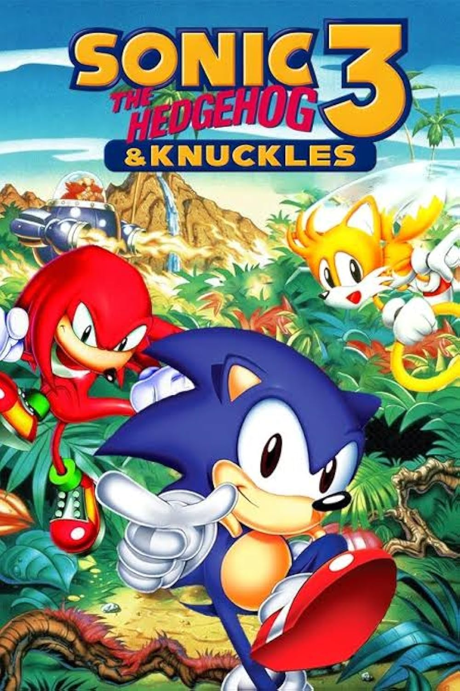

Bem-vindo à GameZone Retro!
Sonic & Knucklesé um jogo de plataforma lançado pela Sega em 1994, para o Mega Drive. Nele, o jogador pode controlar Sonic ou Knuckles, cada um com habilidades diferentes.
Instagram preços no Instagram!

⭐ Personagens
💰 Produtos
| Produto | Preço |
|---|---|
| Sonic & Knuckles | R$ 300,00 |
| Cartucho MegDrive | R$ 100,00 |
| Controle MegaDrive | R$ 80,00 |
Um Jogo Mais Do que Divertido 🎮
© 2026 GameZone Retro